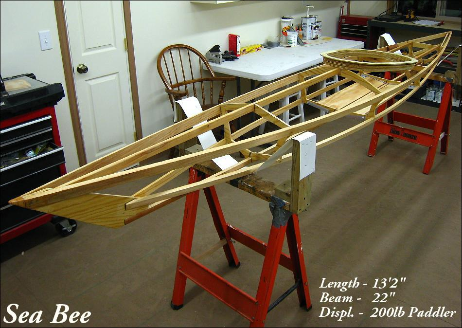

| Sea Bee | Menu Previous Page Next Page |
|

The Sea Bee 13 is designed for paddlers up to 200lbs. The boat is designed for good handling in rough water conditions. The design has been modified as a multi-chine kayak. Sea Bee 13 Drawings / Offsets are now available. Use the {Back} key to return.
|
|